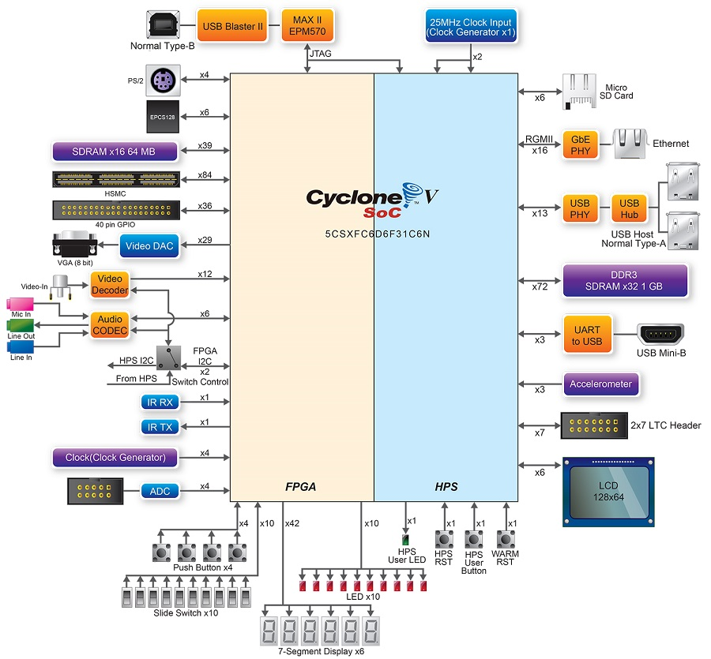
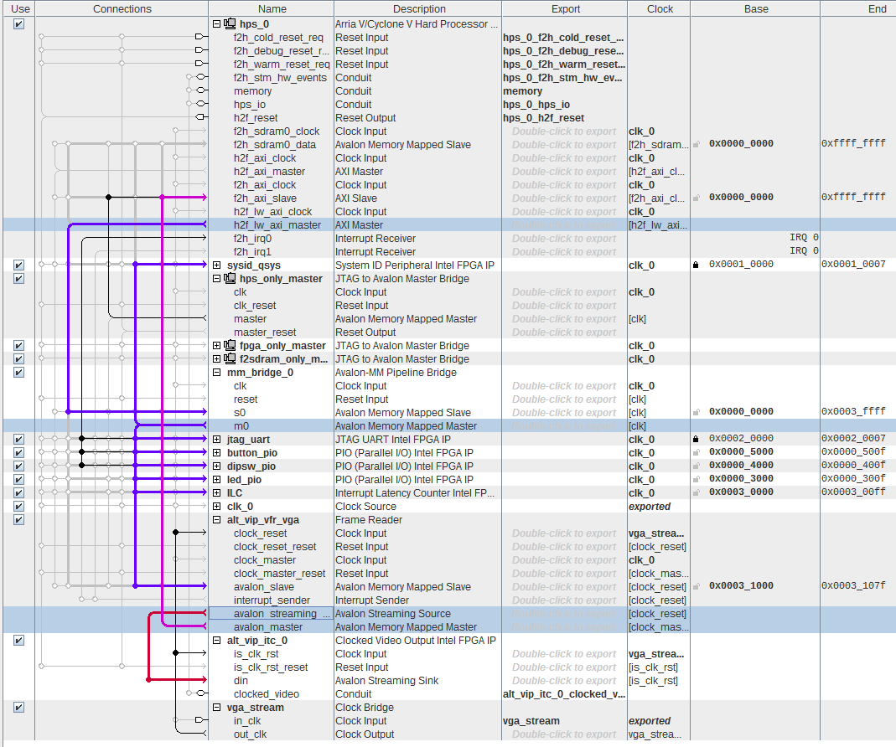

Tutorial - HPS + FPGA - VGA¶
Se repararem em nosso hardware verificamos que o mesmo possui uma saída de vídeo VGA, porém os sinais do VGA foram conectados nos pinos da FPGA! Tornando necessário a criação de um hardware e sua conexão com o HPS para que possamos fazer com que nosso Linux tenha uma saída de vídeo.
Diagrama

Para conseguirmos ter uma saída de vídeo no nosso sistema embarcado, teremos que realizar os seguintes passos:
- Configurar um hw que gerencie VGA
- alt_vip_*
- pense que vamos adicionar na FPGA uma 'placa de vídeo' muito simples
- Adicionar ao kernel um device driver para gerenciar esse hardware
- Configurar o kernel adicionando a parte de FB
- compilar o kernel
- Configurar no buildroot um programa capaz de manipular o FB e exibir uma imagem
Frame Buffer¶
Antes de mexermos com o hardware, vamos ver como o Linux trata uma saída de vídeo! Você já ouviu falar de frame buffer (FB)? Verifique que o seu PC possui um:
$ ls /dev | grep fb
O FB é uma região da memória RAM reservada e que contém um bitmap (se tiver uma placa de vídeo, essa memória pode estar localizada nela), esse bitmap é convertido (por hardware ou software) para a saída de vídeo em questão. Essa conversão de bitmap para saída de vídeo depende do driver de vídeo que foi carregado para gerenciar (e criar) o FB, no caso de placas de vídeo intel, é utilizado o driver vesa.
Porém nem tudo que é exibido passa diretamente pelo FB, alguns programas podem querer maior performance e podem acessar o display direto (Direct Graphics Access), como demonstrado no diagrama a seguir:

Framebuffer Console
O Linux possui um driver (fbcon) que exibe um console em um framebuffer, para usar, basta ativar na configuração do kernel:
-
Device Drivers
 Graphics Support->Frame buffer Devices->Console display
driver support Framebuffer Console Support
Graphics Support->Frame buffer Devices->Console display
driver support Framebuffer Console Support -
Para mais detalhes: https://www.kernel.org/doc/html/latest/fb/fbcon.html
Hardware¶
Como no exemplo anterior (para ganhar tempo), vamos utilizar um hardware da Terasic que já possui a parte da FPGA configurada para trabalharmos com o VGA. Copie a pasta DE10-Standard-v.1.3.0-SystemCD/Demonstration/SoC_FPGA/DE10_Standard_FB/ para o seu repositório.
Com o projeto DE10_Standard_FB copiado, abra o projeto no quartus e analise o
soc_system.qsys no Platform Designer, você deve ver algo como:
Eu deixei a mostra somente as partes referentes ao vídeo!

Entendo o HW¶
O projeto de HW possui dois componentes para tratar o VGA: alt_vip_vfr_vga e
alt_vip_itc_0, ambos fazem parte do pacote de IPs: 'Video and Image Processing
Suite Intel FPGA' específico para processamento de vídeo (já suporta 8K e +60Hz)
Video and Image Process (VIP) Suite Intel FPGA
- Retirado do site da Intel:
The Intel® FPGA Video and Image Processing Suite is a collection of Intel FPGA IP functions that you can use to facilitate the development of custom video and image processing (VIP) designs. These Intel FPGA IP functions are suitable for use in a wide variety of image processing and display applications, such as video surveillance, broadcast, video conferencing, and medical and military imaging.
The Video and Image Processing Suite features cores that range from simple building block functions, such as color space conversion to sophisticated video scaling functions that can implement programmable polyphase scaling.
- All the VIP cores use an open, low-overhead Avalon® Streaming (Avalon-ST) interface standard so that they can be easily connected
- You can use VIP cores to quickly build a custom video processing signal chain using the Intel Quartus® Prime Lite or Standard Edition software and the associated Platform Designer
- You can mix and match VIP cores with your own proprietary intellectual property (IP)
- You can use the Platform Designer to automatically integrate embedded processors and peripherals and generate arbitration logic
-
Capable of supporting 8K video at 60fps and above

alt_vip_vfr_vga¶
É um periférico do tipo Frame Reader e é responsável por fazer a leitura de
um Frame Buffer alocado em memória (avalon_master) e o transformar em um
Streaming (avalon_streaming).
A maioria dos IP do VIP operam no barramento de dados do
tipo:avalon_streaming, por isso é necessário fazer a leitura do FB (que está
alocado na memória DDR3, conectada ao ARM). Os dados da DDR3 são transferidos
para o alt_vip_vfr_vga via DMA pelo ARM/Linux, inicializado pelo device
driver carregado no Linux!
alt_vip_itc¶
É um periférico de vídeo que faz a conversão do streaming de pixels para a
saída de vídeo em questão (VGA). O VGA é um formato de saída de vídeo DIGITA que
possui 5 sinais: HSYNC/ VSYNC/ R/G/B.
- HSYNC: indica o fim da linha
- VSYNC: indica o fim da tela
- R/G/B: são os valores dos pixels.
Note
O sinal VGA é simples. que até da para gerar via arduino:
- http://labdegaragem.com/profiles/blogs/gerando-sinal-vga-colorido-com-arduino-completo
Compilando¶
Agora que analisamos o HW, podemos compilar e utilizar no nosso SoC!
Execute
- Gere o
soc_system.dtbdo projeto- Grave o novo
soc_system.dtbno SDCard (mesma partição do kernel)
- Grave o novo
- Gere o
soc_system.rbfdo projeto (COMPILAR O QUARTUS!)- Grave o novo
rbfno SDCard (mesma partição do kernel)
- Grave o novo
Driver¶
Será necessário carregarmos um device driver no kernel do linux para que
possamos utilizar essa saída de vídeo recém criada. Porém o driver do IP
alt_vip_vfr_vga não é oficial do kernel, vamos ter que adicionar manualmente!
dts¶
Mas como o linux sabe que existe uma saída de vídeo? No nosso caso será via o
device tree (.dtb) que é passado pelo u-boot na inicialização do kernel, se
repararmos no novo .dts gerado com o hardware, existe um novo componente
chamado de alt_vip_vfr_vga, que é compatível com o driver vip-frame-reader-9.1:
alt_vip_vfr_vga: vip@0x100031000 {
compatible = "ALTR,vip-frame-reader-14.0", "ALTR,vip-frame-reader-9.1";
reg = <0x00000001 0x00031000 0x00000080>;
clocks = <&clk_0>;
max-width = <1024>; /* MAX_IMAGE_WIDTH type NUMBER */
max-height = <768>; /* MAX_IMAGE_HEIGHT type NUMBER */
bits-per-color = <8>; /* BITS_PER_PIXEL_PER_COLOR_PLANE type NUMBER */
colors-per-beat = <4>; /* NUMBER_OF_CHANNELS_IN_PARALLEL type NUMBER */
beats-per-pixel = <1>; /* NUMBER_OF_CHANNELS_IN_SEQUENCE type NUMBER */
mem-word-width = <128>; /* MEM_PORT_WIDTH type NUMBER */
}; //end vip@0x100031000 (alt_vip_vfr_vga)
driver¶
O driver vip-frame-reader-9.1 não é oficial do linux, vamos ter que pegar uma
implementação realizada pelo o pessoal da Altera e utilizar. Os drivers no
repositório do Linux ficam na pasta: linux/drivers. No caso do vídeo/
framebuffer, em: linux/drivers/video/fbdev.
Adicionando o driver altvipfb
Siga o roteiro em: https://github.com/Insper/Embarcados-Avancados/blob/master/driver/altvipfb/README.md e depois volte para essa página!
Note
Esse tutorial incluiu o driver do fb no kernel, outra opção seria criar um módulo (module) que poderia ser carregado conforme a necessidade.
Testando
- Compile o kernel
- Copie o zImage novo para o SDCARD
- Liga um monitor a VGA
- Inicialize o linux embarcado
Se tudo der certo, você deve ver dois pinguins no canto esquerdo do monitor. Cada pinguim representa um core do sistema, como nosso ARM é um dual core, temos dois. Esse pinguins aparecem porque ativamos essa opção no kernel:
CONFIG_LOGO=y CONFIG_LOGO_LINUX_MONO=y CONFIG_LOGO_LINUX_VGA16=y CONFIG_LOGO_LINUX_CLUT224=y
Note
É possível editar o pinguim e fazer por exemplo, aparecer a carinha de
vocês! Os arquivos ppm ficam na pasta /drivers/video/logo/, esses são
então compilados na compilação do kernel.
Quer fazer umas coisas legais com o FB? Tenta o seguinte:
- Exibir imagem randômica no FB:
sudo cat /dev/urandom > /dev/fb0
Buildroot¶
São diversas as soluções de desenvolvimento de interface gráfica para Linux embarcado, e nem todas envolvem um gerenciador de janelas. A seguir uma lista de ferramentas que podem ser utilizadas:
- GUI:
- LittlevGL: https://littlevgl.com/
- QT: https://www.qt.io/
- emWin (comercial): https://www.segger.com/products/user-interface/emwin/
- ...
Existem outras soluções, vamos usar uma delas para exibir uma imagem na nossa
tela! Quando eu estava fazendo esse roteiro, queria algo mais simples, em uma
busca (não muito rápida) na internet (keyword: linux frame buffer show image)
eu encontrei esse programa: fbv, que por sorte está no buildroot.
fbv
-
OVERVIEW fbv (FrameBuffer Viewer) is a simple program to view pictures on a linux framebuffer device. In 2000, when fbv was created, there were no other situable programs performing the same task, so the authors decided to follow the rule: 'If you need a tool - write it yourself!' :-)
Faça
- Adicione o programa
fbvao buildroot - Compile o novo fs
- Grave no SDCard
- Grave uma imagem no SDCard
- No target, exiba a imagem usando o
fbv